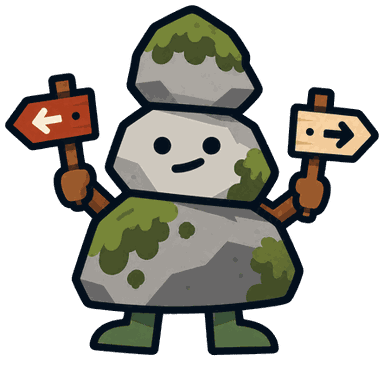

Vyrdepil
Spel og verktøy laga for grunnskulen
Personvern
Personvern og datasikkerheit
Vi tek personvern på alvor! Alle spel og verktøy på denne sida er laga for å verna dine data og ditt personvern.
Dine data er trygge
- Alt køyrer lokalt: All spel- og verktøylogikk køyrer i nettlesaren din. Ingen brukardata blir sende til oss.
- Ingen cookies eller sporing: Vi brukar ingen cookies, analytics eller sporingsverktøy.
- Open kjeldekode: All kode er synleg og kan inspiserast av kven som helst.
- Ingen innlogging: Alt er gratis og krevjer ingen brukarregistrering.
Bruk av kunstig intelligens
Delar av koden er skriven med hjelp frå KI-verktøy, men all kode er lesen, kontrollert og handsama av eit menneske før ho blir publisert. Sjølve spela og verktøya inneheld ingen KI: ingenting du skriv, teiknar eller lastar opp blir sendt til ei KI-teneste — verken for å svare deg eller for å trene ein modell.
Kva data lagrar Vyrdepil?
Nokre spel og verktøy kan lagre oppsett, framgang eller filer lokalt i nettlesaren. Bragdane og framgangssamandrag frå Heimsank, Vidfaren, Tidvis, Bolkestokk og Ormritaren blir samla i VyrdepilStorage. Gamle bragder og leksjonsframgang blir førte over fyrste gong du lastar ei relevant side; elevnamn og oppteningsdatoar blir ikkje lagra i samlinga. Kvar app opplyser om kva som blir lagra, og dataa blir verande på eininga di.
Livslina er framleis ei prøveutgåve og står ikkje i appoversikta. Opnar du spelet, lagrar nettlesaren aktiv spelstatus, målarane for trivsel, energi og sosialt, og planvala dine lokalt, slik at du kan halde fram neste halvår.
I den fulle personvernerklæringa finn du detaljar om kva kvart einskild spel lagrar, kva eksterne tenester som blir brukte, korleis du slettar data, og rettane dine.
Lisens
Du har lov til å bruke alt saman
Spela, verktøya og koden her er gratis å bruke, kopiere og endre. Det heiter CC BY-NC-SA 4.0, og det tyder tre ting:
- Sei kvar det kjem frå. Brukar du noko herifrå ein annan stad, skriv du at det er laga til Vyrdepil.
- Ikkje ten pengar på det. Du kan ikkje selje det, eller leggje det bak ei betalingsmur.
- Del vidare på same måten. Lagar du di eiga utgåve og gjev henne til andre, skal dei ha lov til akkurat det same som du hadde.